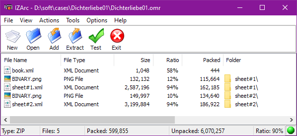
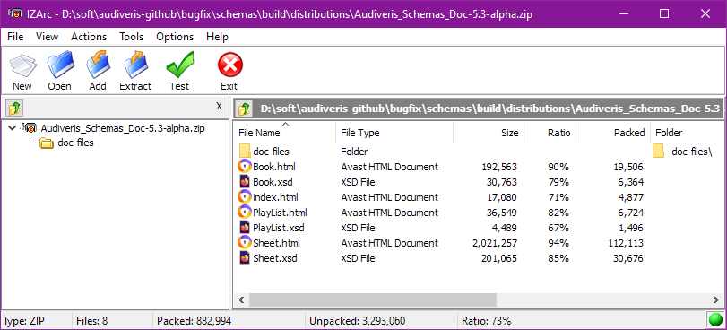

A .omr file is Audiveris project file for a given image(s) input file (book).
It gathers all OMR information related to a given Book, including its contained Sheet instances.
The project file is merely the result of the XML marshalling of a book and its sheets, so there is no logical difference in the project structure in memory and on disk. In memory there are a few additional transient variables, meant only for processing speedup.
This identical structuring between memory and disk allows the gradual processing of books of any size, since data can be continuously saved to (and restored from) disk while sheets are being processed.
All other Audiveris outputs derive from this project data.
The internal project structure is specific to Audiveris software but, as opposed to commercial software, it is not opaque and is meant for public access, either via Audiveris API or by direct access to project XML fragments.
The file is a collection of XML files gathered into a Zip archive, whose content can be easily browsed (and even modified -- at your own risk!...) via any Zip reader or editor.

The picture above is a Zip view on a 2-sheet book (Dichterliebe01.omr example).
Here below is the same example, presented as a tree:
├── book.xml
├── sheet#1
│ ├── BINARY.png
│ └── sheet#1.xml
└── sheet#2
├── BINARY.png
└── sheet#2.xml
As you can see, we have in this .omr file example:
book.xml filesheet#N subfolder for each sheet in the book, which here contains:
BINARY.png filesheet#N.xmlfileBeyond this small example, here below are all the possible file kinds:
| File Name | Content |
|---|---|
book.xml |
Skeleton of book hierarchy |
| sheet#N/ | Specific folder for sheet #N |
sheet#N/BINARY.png |
Black and white image of sheet #N |
sheet#N/GRAY.png |
Gray image of sheet #N |
sheet#N/HEAD_SPOTS.png |
Head spots image for sheet #N |
sheet#N/sheet#N.xml |
OMR details for sheet #N |
You may have noticed two files that did not appear in our small example,
namely GRAY.png and HEAD_SPOTS.png:
GRAY.png image is built from the sheet original input image (which may be a colored image,
perhaps with an alpha channel) and results in pixel gray values.BINARY step processes this gray image to produce the black and white BINARY.png image,
which is needed by all subsequent steps.
By default, the gray image is then discarded.GRAY.png image would still be useful is when the user would want to modify
the image geometry, typically by rotating or de-warping
-- features not yet provided as of this writing.
In that case, quality would be better preserved when operating on gray rather than binary image.HEAD_SPOTS.png image is a temporary information carried over from BEAMS step to HEADS step.
It takes advantage of the image processing performed during the BEAMS step to provide the
image areas (spots) where black heads are likely to be recognized.HEADS step.We wanted to make .omr file as open as possible to let end-users and developers use directly
this file for any purpose compliant with Audiveris AGPL license.
To this end, we have developed a specific documentation set.
For each of the two kinds of XML files (book.xml and sheet#N.xml) we provide:
.xsd file..xsd file can be further used to automatically:
.html file meant for a human reader.
It documents the various elements and attributes of the XML hierarchy,
augmented by JavaDoc annotations from Audiveris source code.Since Audiveris 5.3, the Split & Merge feature can accept play-list definitions created via
Audiveris UI or provided as XML files created by any plain text editor.
Consequently, we provide an additional .xsd + .html pair, this time for a playlist.xml file.

Here below are direct links to the documentation components:
Schema verbatim (.xsd) |
Schema documentation (.html) |
|---|---|
| Book.xsd | Book |
| Sheet.xsd | Sheet |
| PlayList.xsd | PlayList |